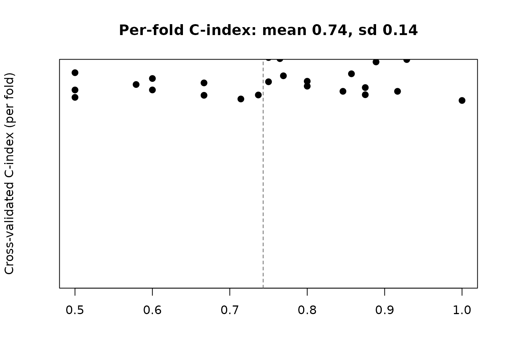

vignettes/case-study-small-cohort.Rmd
case-study-small-cohort.RmdThis is a synthetic-data walkthrough demonstrating how the
events_per_parameter guardrail and fold-level reporting
expose unstable signatures. It is a vignette, not a study. The narrative
follows the three-tier structure used across the case studies:
a naive analysis first, then rnaSentry standing
guard, then the counterfactual.
We build a 30-sample cohort with 23 events and a real (if weak) survival signal driven by five genes, then ask for a 5-gene signature. This is 4.6 events per parameter – below the guardrail of 5.
library(rnaSentry)
library(SummarizedExperiment)
#> Loading required package: MatrixGenerics
#> Loading required package: matrixStats
#>
#> Attaching package: 'MatrixGenerics'
#> The following objects are masked from 'package:matrixStats':
#>
#> colAlls, colAnyNAs, colAnys, colAvgsPerRowSet, colCollapse,
#> colCounts, colCummaxs, colCummins, colCumprods, colCumsums,
#> colDiffs, colIQRDiffs, colIQRs, colLogSumExps, colMadDiffs,
#> colMads, colMaxs, colMeans2, colMedians, colMins, colOrderStats,
#> colProds, colQuantiles, colRanges, colRanks, colSdDiffs, colSds,
#> colSums2, colTabulates, colVarDiffs, colVars, colWeightedMads,
#> colWeightedMeans, colWeightedMedians, colWeightedSds,
#> colWeightedVars, rowAlls, rowAnyNAs, rowAnys, rowAvgsPerColSet,
#> rowCollapse, rowCounts, rowCummaxs, rowCummins, rowCumprods,
#> rowCumsums, rowDiffs, rowIQRDiffs, rowIQRs, rowLogSumExps,
#> rowMadDiffs, rowMads, rowMaxs, rowMeans2, rowMedians, rowMins,
#> rowOrderStats, rowProds, rowQuantiles, rowRanges, rowRanks,
#> rowSdDiffs, rowSds, rowSums2, rowTabulates, rowVarDiffs, rowVars,
#> rowWeightedMads, rowWeightedMeans, rowWeightedMedians,
#> rowWeightedSds, rowWeightedVars
#> Loading required package: GenomicRanges
#> Loading required package: stats4
#> Loading required package: BiocGenerics
#> Loading required package: generics
#>
#> Attaching package: 'generics'
#> The following objects are masked from 'package:base':
#>
#> as.difftime, as.factor, as.ordered, intersect, is.element, setdiff,
#> setequal, union
#>
#> Attaching package: 'BiocGenerics'
#> The following objects are masked from 'package:stats':
#>
#> IQR, mad, sd, var, xtabs
#> The following objects are masked from 'package:base':
#>
#> anyDuplicated, aperm, append, as.data.frame, basename, cbind,
#> colnames, dirname, do.call, duplicated, eval, evalq, Filter, Find,
#> get, grep, grepl, is.unsorted, lapply, Map, mapply, match, mget,
#> order, paste, pmax, pmax.int, pmin, pmin.int, Position, rank,
#> rbind, Reduce, rownames, sapply, saveRDS, table, tapply, unique,
#> unsplit, which.max, which.min
#> Loading required package: S4Vectors
#>
#> Attaching package: 'S4Vectors'
#> The following object is masked from 'package:utils':
#>
#> findMatches
#> The following objects are masked from 'package:base':
#>
#> expand.grid, I, unname
#> Loading required package: IRanges
#> Loading required package: Seqinfo
#> Loading required package: Biobase
#> Welcome to Bioconductor
#>
#> Vignettes contain introductory material; view with
#> 'browseVignettes()'. To cite Bioconductor, see
#> 'citation("Biobase")', and for packages 'citation("pkgname")'.
#>
#> Attaching package: 'Biobase'
#> The following object is masked from 'package:MatrixGenerics':
#>
#> rowMedians
#> The following objects are masked from 'package:matrixStats':
#>
#> anyMissing, rowMedians
set.seed(30)
n_sm <- 30
counts <- matrix(rpois(60 * n_sm, lambda = 500), nrow = 60, ncol = n_sm,
dimnames = list(paste0("gene", 1:60), paste0("S", 1:n_sm)))
sig_expr <- colMeans(counts[1:5, , drop = FALSE])
risk <- scale(sig_expr)[, 1] * 0.5
event_time <- rexp(n_sm, rate = 0.05 * exp(0.9 * risk))
censor_time <- rexp(n_sm, rate = 0.02)
cd <- DataFrame(time = pmin(event_time, censor_time),
event = as.integer(event_time < censor_time),
row.names = colnames(counts))
se <- SummarizedExperiment(assays = list(counts = counts), colData = cd)
sig <- build_signature(se, "time", "event", top_n = 5,
repeats = 5, folds = 5, seed = 30)
#> Warning: Only 23 event(s) for a 5-gene signature (4.6 events per parameter),
#> below 'min_events_per_parameter' = 5. Cross-validated concordance and hazard
#> ratios are unstable at this event count; consider fewer genes or a larger
#> cohort.A standard analysis reports the single number the summary returns and stops there:
sig$cv_summary
#> mean sd
#> 0.7430831 0.1411627The mean cross-validated concordance is 0.74 – which a careless reader would call “decent.” A naive manuscript would report “cross-validated C = 0.74” as evidence that the signature is prognostic, with no sense of how much that single mean is hiding.
sig$flags
#> check severity
#> 1 events_per_parameter warning
#> detail
#> 1 Only 23 event(s) for a 5-gene signature (4.6 events per parameter), below 'min_events_per_parameter' = 5. Cross-validated concordance and hazard ratios are unstable at this event count; consider fewer genes or a larger cohort.
#> stage
#> 1 build_signatureThe events_per_parameter warning fires immediately – 23
events for 5 genes is 4.6 per parameter, below the guardrail of 5 – and
is recorded in the stage’s flag ledger so it propagates into the
rendered report.
sig$cv_results
#> repeat_id fold c_index
#> 1 1 1 0.5000000
#> 2 2 1 0.6000000
#> 3 3 1 0.5789474
#> 4 4 1 0.7500000
#> 5 5 1 0.8750000
#> 6 1 2 0.7368421
#> 7 2 2 0.7647059
#> 8 3 2 0.8461538
#> 9 4 2 0.6923077
#> 10 5 2 0.6666667
#> 11 1 3 0.7142857
#> 12 2 3 0.6666667
#> 13 3 3 0.7692308
#> 14 4 3 0.9285714
#> 15 5 3 0.9166667
#> 16 1 4 0.7500000
#> 17 2 4 0.5000000
#> 18 3 4 0.8888889
#> 19 4 4 0.5000000
#> 20 5 4 0.8000000
#> 21 1 5 0.8750000
#> 22 2 5 0.8571429
#> 23 3 5 1.0000000
#> 24 4 5 0.8000000
#> 25 5 5 0.6000000The per-fold concordances range from 0.50 to 1.00 across repeats and folds. With only a handful of held-out samples per fold, single-fold C estimates are nearly coin flips, and the standard deviation (0.14) is enormous relative to the mean. A signature like this is unstable and should be treated as hypothesis-generating only.
set.seed(30)
cv <- sig$cv_results
stripchart(cv$c_index, method = "jitter", jitter = 0.12, pch = 19, cex = 1.1,
ylim = c(0, 1.05), ylab = "Cross-validated C-index (per fold)",
main = sprintf("Per-fold C-index: mean %.2f, sd %.2f",
mean(cv$c_index), stats::sd(cv$c_index)))
abline(v = mean(cv$c_index), lty = 2, col = "grey40")
Per-fold cross-validated concordance across repeats and folds (one point per fold). The vertical dashed line marks the mean; the spread from 0.50 to 1.00 is the instability the mean hides.
| Naive analysis (Tier 1) | rnaSentry (Tier 2) | |
|---|---|---|
| Reported statistic | mean CV C = 0.74, quoted alone | mean + fold-level distribution (range 0.50-1.00, sd 0.14) |
| Events per parameter | not computed | 4.6 < 5, events_per_parameter warning in the
ledger |
| Scientific status | “a decent prognostic signature” | “hypothesis-generating only; unstable” |
What a guarded analysis can claim: the exact same
cross-validated concordance that a naive analysis would headline as 0.74
is shown by build_signature() to be an average over
near-coin-flip folds – and the guardrail warns rather than silently
proceeding. This is the documented “small-cohort trap,” quantified in
our simulation analysis (validation/simulate_study.R): with
fewer than ~5 events per signature gene, neither the concordance nor the
hazard ratios are trustworthy, and a mean C-index hides the
instability that the fold-level table exposes.
The takeaway is exactly the documented “small-cohort trap”: with
fewer than ~5 events per signature gene, neither the concordance nor the
hazard ratios are trustworthy. This is why
build_signature() reports the per-fold distribution, not
just the mean, and why the guardrail warns rather than silently
proceeding.
sessionInfo()
#> R version 4.6.1 (2026-06-24)
#> Platform: x86_64-pc-linux-gnu
#> Running under: Ubuntu 24.04.4 LTS
#>
#> Matrix products: default
#> BLAS: /usr/lib/x86_64-linux-gnu/openblas-pthread/libblas.so.3
#> LAPACK: /usr/lib/x86_64-linux-gnu/openblas-pthread/libopenblasp-r0.3.26.so; LAPACK version 3.12.0
#>
#> locale:
#> [1] LC_CTYPE=C.UTF-8 LC_NUMERIC=C LC_TIME=C.UTF-8
#> [4] LC_COLLATE=C.UTF-8 LC_MONETARY=C.UTF-8 LC_MESSAGES=C.UTF-8
#> [7] LC_PAPER=C.UTF-8 LC_NAME=C LC_ADDRESS=C
#> [10] LC_TELEPHONE=C LC_MEASUREMENT=C.UTF-8 LC_IDENTIFICATION=C
#>
#> time zone: UTC
#> tzcode source: system (glibc)
#>
#> attached base packages:
#> [1] stats4 stats graphics grDevices utils datasets methods
#> [8] base
#>
#> other attached packages:
#> [1] SummarizedExperiment_1.42.0 Biobase_2.72.0
#> [3] GenomicRanges_1.64.0 Seqinfo_1.2.0
#> [5] IRanges_2.46.0 S4Vectors_0.50.2
#> [7] BiocGenerics_0.58.1 generics_0.1.4
#> [9] MatrixGenerics_1.24.0 matrixStats_1.5.0
#> [11] rnaSentry_0.99.6 BiocStyle_2.40.0
#>
#> loaded via a namespace (and not attached):
#> [1] Matrix_1.7-5 jsonlite_2.0.0 compiler_4.6.1
#> [4] BiocManager_1.30.27 jquerylib_0.1.4 splines_4.6.1
#> [7] systemfonts_1.3.2 textshaping_1.0.5 yaml_2.3.12
#> [10] fastmap_1.2.0 lattice_0.22-9 XVector_0.52.0
#> [13] R6_2.6.1 S4Arrays_1.12.0 knitr_1.52
#> [16] htmlwidgets_1.6.4 DelayedArray_0.38.2 bookdown_0.48
#> [19] desc_1.4.3 bslib_0.12.0 rlang_1.3.0
#> [22] cachem_1.1.0 xfun_0.60 fs_2.1.0
#> [25] sass_0.4.10 otel_0.2.0 SparseArray_1.12.2
#> [28] cli_3.6.6 withr_3.0.3 pkgdown_2.2.1.9000
#> [31] grid_4.6.1 digest_0.6.39 lifecycle_1.0.5
#> [34] evaluate_1.0.5 ragg_1.5.2 survival_3.8-6
#> [37] abind_1.4-8 rmarkdown_2.32 tools_4.6.1
#> [40] htmltools_0.5.9